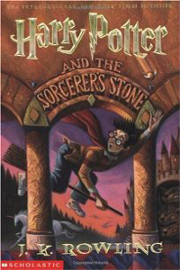

Harry Potter and the Sorcerer's Stone
Harry Potter en de Steen der Wijzen
Harry Potter is een doodgewone, maar ongelukkige jongen die sinds de dood van zijn ouders bij zijn saaie en hardvochtige oom en tante woont, in de bezemkast onder de trap.Op een dag arriveert er een geheimzinnige brief voor hem. En daarna nog een, en nog een. De brieven veranderen Harrys hele leven: hij wordt gered door een woest figuur op een vliegende motorfiets en hij komt erachter wie zijn ouders werkelijk waren.Met een speciale trein die vertrekt van Perron 9¾ belandt hij op Zweinsteins Hogeschool voor Hekserij en Hocus Pocus, waar hij alles leert over bezemstelen, toverdranken en monsters.
€41,78
ISBN: #1234-56789-1